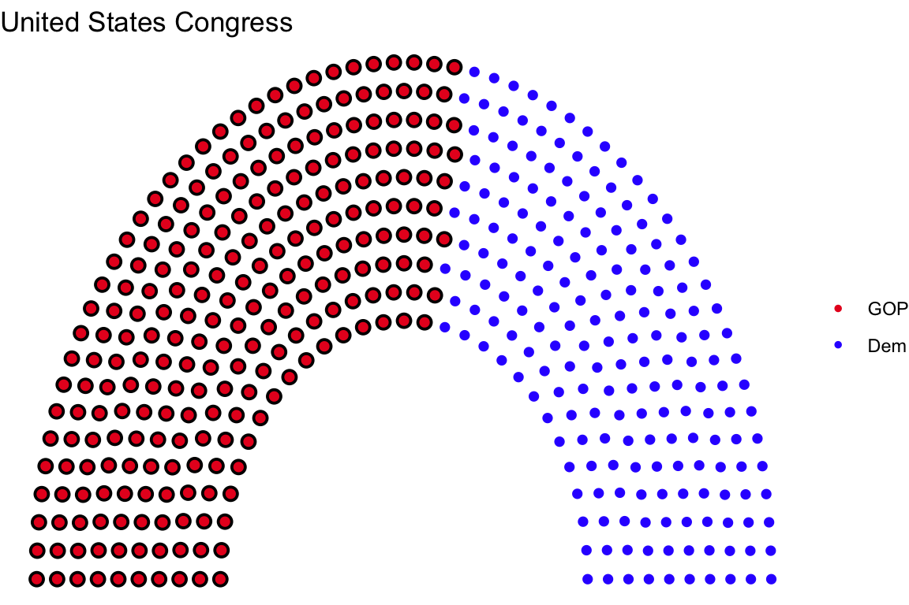
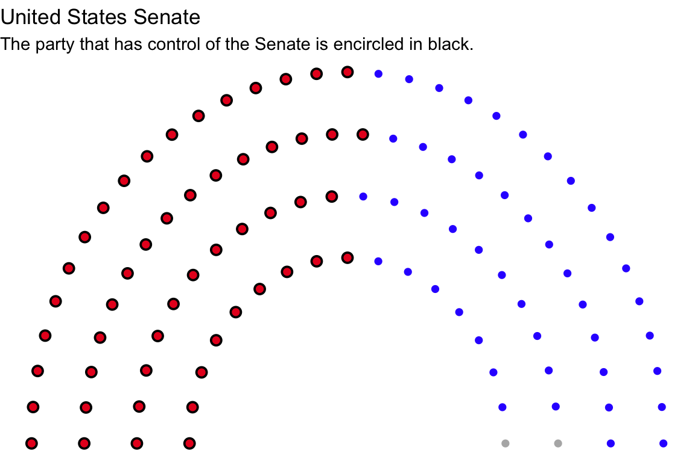
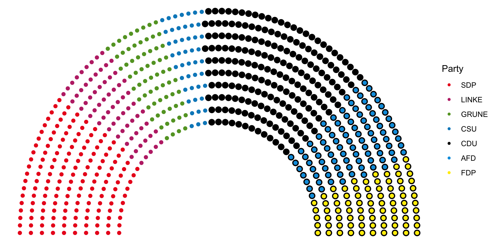
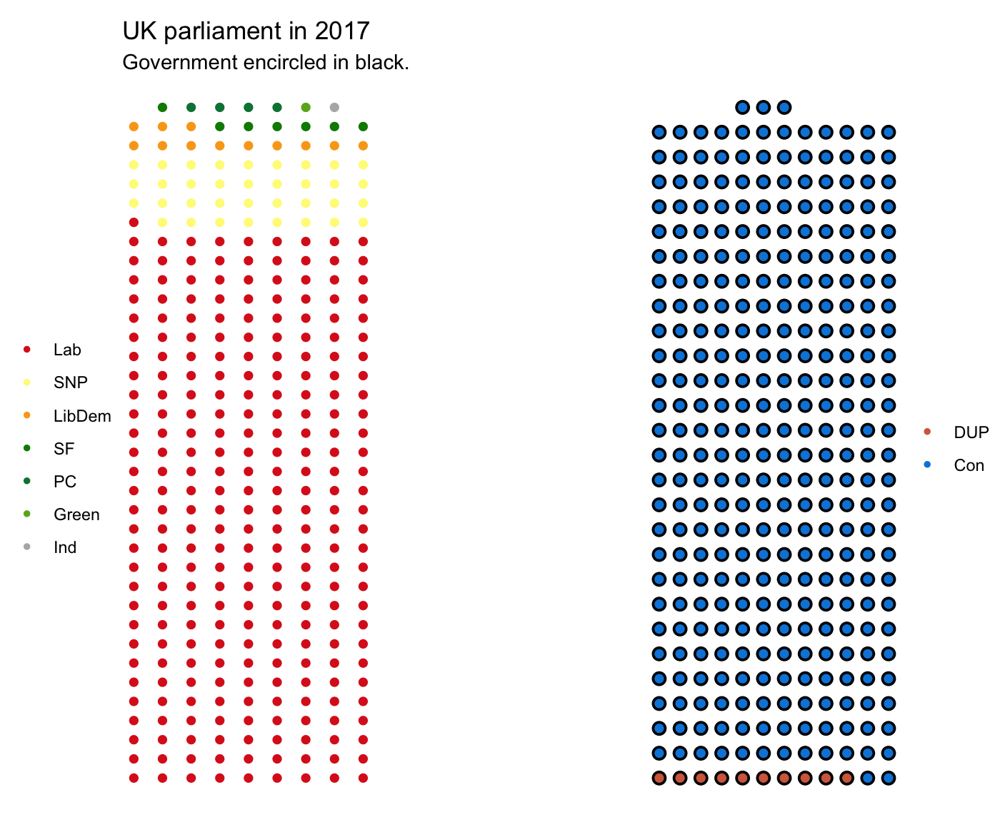
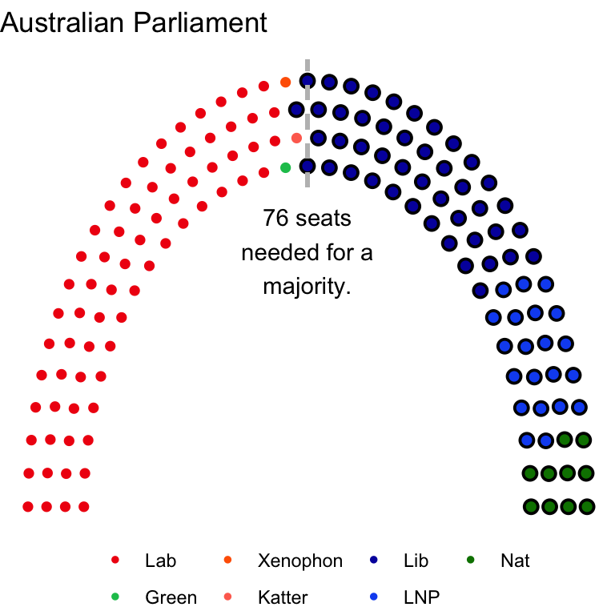

/Rpackages/ggparliament/figure/HexSticker.png)
Parliament plots
This package attempts to implement “parliament plots” - visual representations of the composition of legislatures that display seats colour-coded by party. The input is a data frame containing one row per party, with columns representing party name/label and number of seats, respectively.
This R package is an opinionated ggplot2 extension.
To install the package:
Inspiration from this package comes from: parliamentdiagram, which is used on Wikipedia, parliament-svg, which is a javascript clone, and a discussion on StackOverflow, which provided some of the code for part for the “arc” representations used in this package.
If you have any issues, please note the problem and inform us!
Semicircle parliament
Plot of US Congress
#filter the election data for the most recent US House of Representatives
us_congress <- election_data %>%
filter(country == "USA" &
year == 2016 &
house == "Representatives")
us_congress1 <- parliament_data(election_data = us_congress,
type = "semicircle",
parl_rows = 10,
party_seats = us_congress$seats)
us_senate <- election_data %>%
filter(country == "USA" &
year == 2016 &
house == "Senate")
us_senate <- parliament_data(
election_data = us_senate,
type = "semicircle",
parl_rows = 4,
party_seats = us_senate$seats)ggplot(us_congress1, aes(x,
y,
colour = party_short)) +
geom_parliament_seats() +
#highlight the government with black encircling
geom_highlight_government(government == 1) +
#other aesthetics
theme_void() +
labs(colour = NULL,
title = "United States Congress") +
scale_colour_manual(values = us_congress1$colour,
limits = us_congress1$party_short) 
Plot of US Senate
senate <- ggplot(us_senate, aes(x,
y,
colour = party_long)) +
geom_parliament_seats() +
geom_highlight_government(government == 1) +
theme_void() +
labs(colour = NULL,
title = "United States Senate",
subtitle = "The party that has control of the Senate is encircled in black.") +
scale_colour_manual(values = us_senate$colour,
limits = us_senate$party_long)
senate 
Plot of German Bundestag
germany <- election_data %>%
filter(year == 2017 &
country == "Germany")
germany <- parliament_data(election_data = germany,
parl_rows = 10,
type = 'semicircle',
party_seats = germany$seats)
ggplot(germany, aes(x,
y,
colour = party_short)) +
geom_parliament_seats() +
geom_highlight_government(government == 1) +
labs(colour="Party") +
theme_void() +
scale_colour_manual(values = germany$colour,
limits = germany$party_short) 
Opposing Benches Parliament
United Kingdom
#data preparation
uk_17 <- election_data %>%
filter(country == "UK" &
year == "2017")
uk_17_left <- uk_17 %>%
filter(government == 0)
uk_17_right <- uk_17 %>%
filter(government == 1)
uk_17_left <- parliament_data(
election_data = uk_17_left,
party_seats = uk_17_left$seats,
parl_rows = 9,
type = "opposing_benches")
uk_17_right <- parliament_data(
election_data = uk_17_right,
party_seats = uk_17_right$seats,
parl_rows = 12,
type = "opposing_benches")
right <- ggplot(uk_17_right, aes(x,
y,
colour = party_short)) +
geom_parliament_seats() +
geom_highlight_government(government == 1) +
theme_void() +
labs(colour = NULL) +
scale_colour_manual(values = uk_17_right$colour,
limits = uk_17_right$party_short) +
theme(legend.position = 'right')
left <- ggplot(uk_17_left, aes(x,
y,
colour = party_short,
type = "opposing_benches")) +
geom_parliament_seats() +
theme_void() +
labs(colour = NULL,
title = "UK parliament in 2017",
subtitle="Government encircled in black.") +
scale_colour_manual(values = uk_17_left$colour,
limits = uk_17_left$party_short) +
theme(legend.position = 'left')
uk_parliament<- combine_opposingbenches(left = left,
right = right)
uk_parliament
Horseshoe parliament
Plot of Australian parliament
au <-ggplot(australia1, aes(x,
y,
colour = party_short)) +
geom_parliament_seats() +
geom_highlight_government(government == 1) +
draw_majoritythreshold(n = 76, label = TRUE, type = 'horseshoe') +
theme_void() +
labs(colour = NULL,
title = "Australian Parliament") +
scale_colour_manual(values = australia$colour,
limits = australia$party_short) +
theme(legend.position = 'bottom')
au